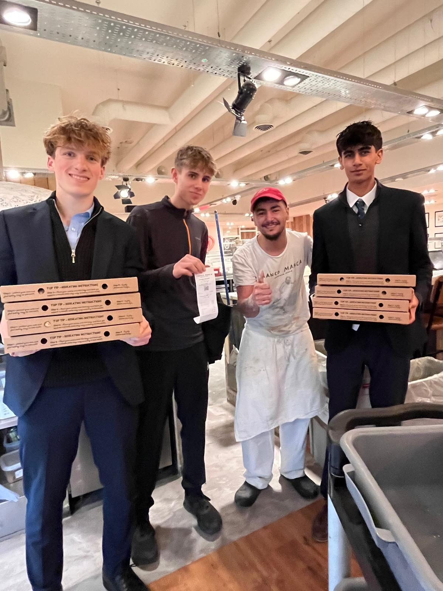
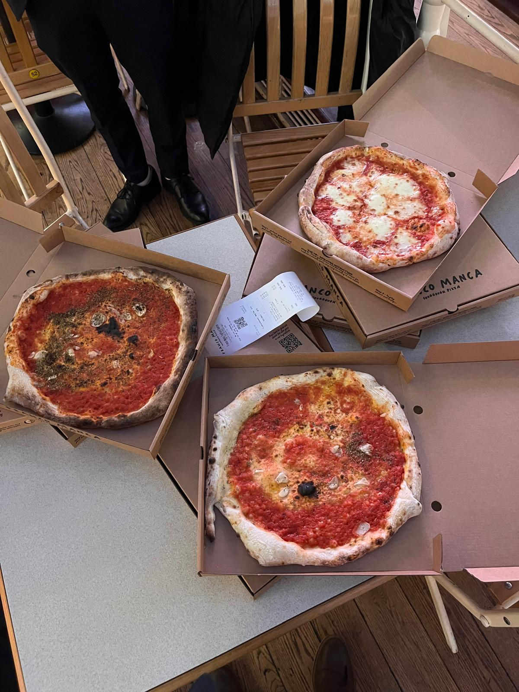
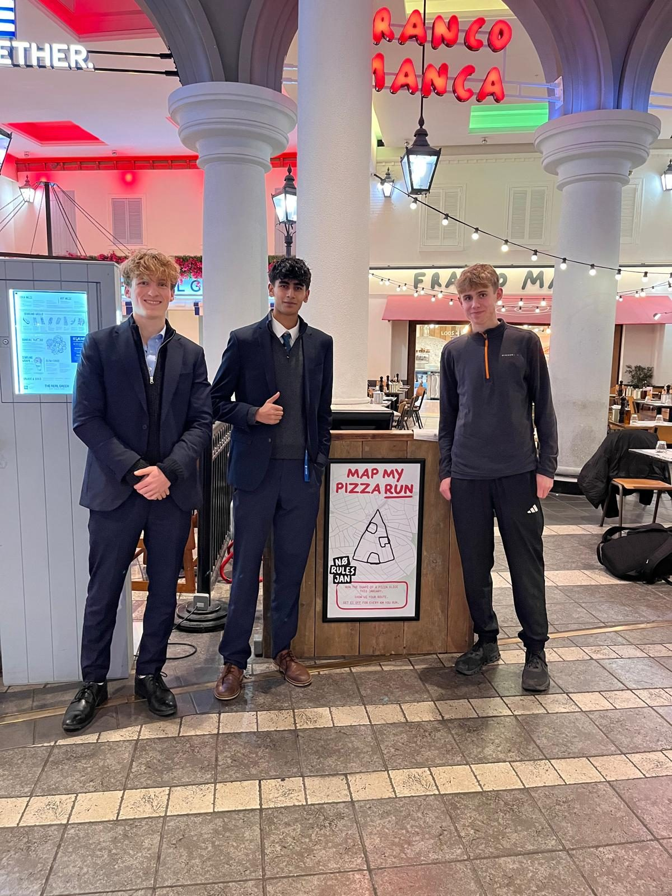
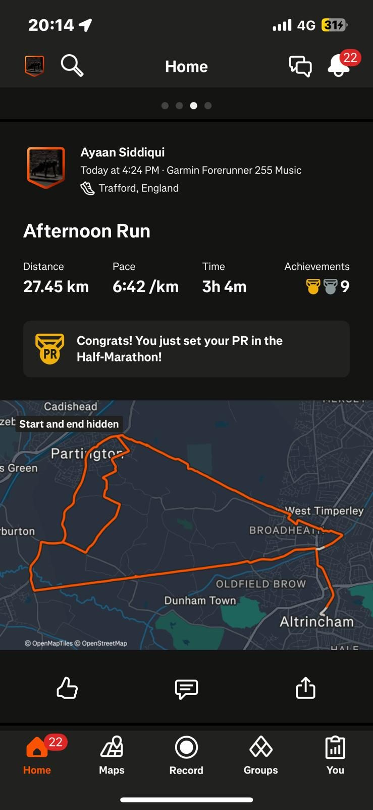
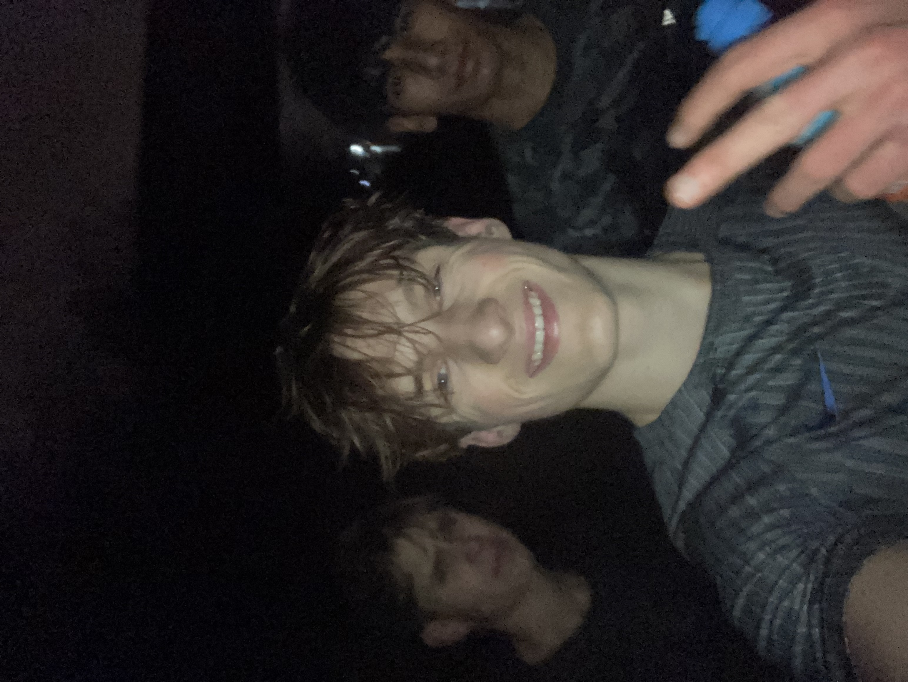

✕ CLOSE

There is no love sincerer than the love of food.— George Bernard Shaw
Franco Manca's 'No Rules Jan': run the shape of a pizza slice, get £1 off for every kilometre you run.
So we ran 27.45km each — all three of us: Dan, Ayaan and Joseph Cuddy. Ayaan even bagged a Half-Marathon PR on the way round.
The reward? £75.60 wiped off the bill. Eight Franco Manca sourdough pizzas. £0.00 paid. The best kind of suffering — the kind that ends in free pizza.




Wiped off the bill by 27.45km of running. Worth every single step.
Back the next one